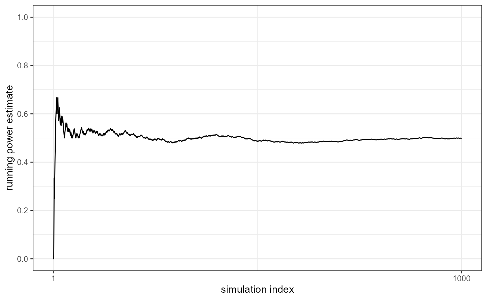
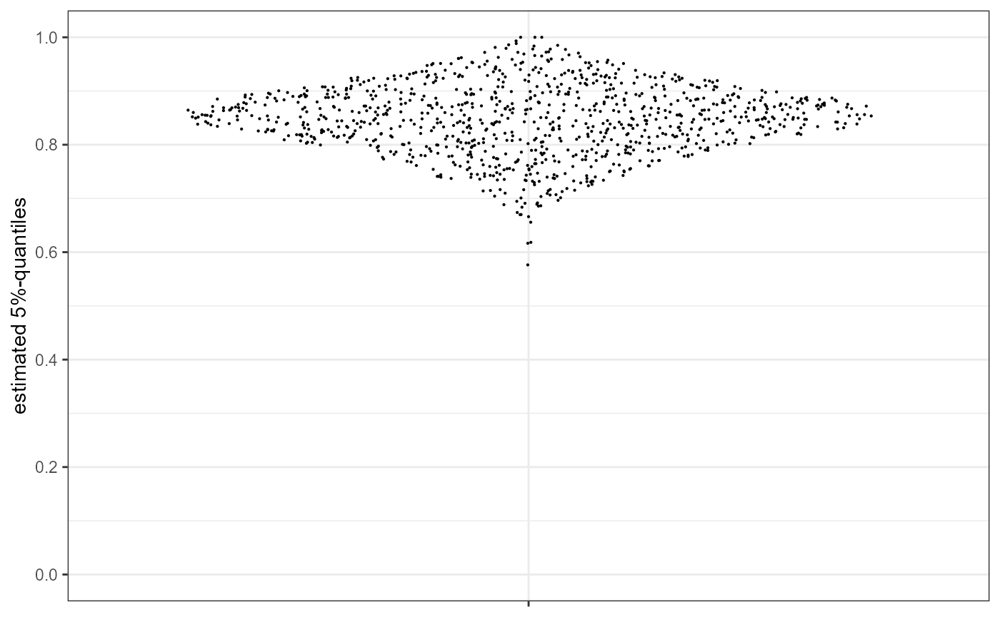

Introduction to using qcapower
Ingo Rohlfing
2026-05-19
Source:vignettes/Introduction.Rmd
Introduction.RmdIntroduction
The R package qcapower allows you to
estimate power with regard to the consistency of a term generated in a
Qualitative Comparative Analysis (QCA). Power is defined in the usual
way as the probability of rejecting the null hypothesis when it is
false. This vignette introduces the package, its in-built functions and
what you can do with the functions’ output. The package includes four
functions:
-
qcapower(): Estimates power with regard to the consistency of a term
-
qp_run_plot(): A plot of the running power estimates
-
qp_quant_plot(): A plot of the 5%-percentiles of the permuted distributions
-
qp_get_n(): Estimates the number of cases needed for achieving a target level of power
All these functions have a term as its subject. In a set-relational context, a term can be anything of the following: A single condition (individually sufficient or INUS), a conjunction, or a disjunction of conditions and conjunctions.
At the moment, the package estimates power for sufficient set relationships and fuzzy sets. In principle, it does not make a difference whether we are interested in sufficiency or necessity. For both types of set relations, the consistency measure is used to distinguish consistent from inconsistent set relations. However, the difference rests in how consistency is calculated and the package currently only implements the consistency formula for consistency.
Estimating power
The qcapower() function can be used to estimate power
given information about the other parameters that influence power. The
code in brackets refers to the parameters in the qcapower()
function. * cases: The number of cases (n) *
null_hypo: The null hypothesis (H0)
* alt_hypo: The alternative hypothesis (H1)
* alpha: The level of significance alpha (default
is 0.05)
The first parameters do not have default values and must be specified
by the user. alpha is set to 0.05 by default.
In fuzzy-set QCA (fsQCA), determining the number of cases is easy because it is the total number of cases in an analysis. The null hypothesis determines the consistency value that separates consistent from inconsistent terms. When it comes to the assignment of outcome values to truth table rows when setting up the truth table for minimization, you might choose 0.85 as the value separating rows that are assigned a “1” (consistency is equal to or above 0.85) from those that receive a “0”. The null hypothesis would then cover the value of 0.849 (when we measure set memberships up to the third decimal place). The alternative hypothesis covers the consistency value that you expect a term to have, in fact. For power analysis, the consistency value of H1 must be larger than of H0 because we expect a term to be consistent.
You need to specify four more parameters for estimating power because
the function implements permutation-based simulations.
* sims: The number of simulations (default is 1000)
* perms: The number of permutations per simulations
(default is 10000)
* cons_threshold: A tolerance parameter for deriving
simulated data with the consistenty level fixed with H1 (default is
0.01)
* set_seed: The reproducibility parameter for the
simulations (default is 135, for no specific reason)
The role of the simulations and permutations is explained in the
manuscript on which this package is based. The tolerance parameter
cons_threshold is part of the package because of how it
creates a hypothetical dataset with the consistency level specified by
alt_hypo. The package first draws a random sample of
n cases (cases) and calculates the consistency
score. If it is smaller than the value of alt_hypo, one
inconsistent case is picked at random from the set of all inconsistent
cases. This case randomly receives a new set membership in the outcome
that is higher than the previous outcome membership because it will
increase the overall consistency of the dataset. If the consistency
score of the dataset is above the target level, we follow the opposite
procedure: A case is sampled for which membership in the outcome is
larger than membership in the term and a lower outcome value is then
reassigned to the case and consistency is calculated again.
These processes are repeated until the consistency score of the
dataset achieves the target value of alt_hypo. Because we
do not constrain fuzzy-set memberships to two decimal places, it is
unlikely that the iterative process does exactly meet the target score.
For this reason, we introduce a tolerance parameter telling the
qcapower() function when the actual consistency value is
sufficiently close to the intended value and the iteration can be
stopped. If one wants to exactly hit the target consistency level, one
only has to set cons_threshold to 0.
If you want to leave the default parameters as they are, you can, for
example, estimate power for H1=1, H0=0.85 and n=15 with one line. The
execution of qcapower() can take some time, depending on
the settings for cases, perms and
sims. We load simulation results into the memory that one
would get from the first line in the following code block.
## power_example <- qcapower(cases = 15, alt_hypo = 1, null_hypo = 0.85)
load("qcapower_vign.RData")
head(qcapower_vign)## power powercum alt_hypo null_hypo cases quant
## 1 0.499 0.0000000 1 0.85 15 0.8104265
## 2 0.499 0.0000000 1 0.85 15 0.8457524
## 3 0.499 0.3333333 1 0.85 15 0.8763145
## 4 0.499 0.2500000 1 0.85 15 0.8248283
## 5 0.499 0.4000000 1 0.85 15 0.8935880
## 6 0.499 0.5000000 1 0.85 15 0.8664958The output is a dataframe with as many rows as simulations. In
addition to the parameters cases, alt_hypo and
null_hypo, it contains three columns:
-
power: The power estimate. The entry is the same in each row because it is the final power estimate for the entire dataset. -
powercum: The cumulative power estimate. It gives you the estimate up to the given row. The cumulative estimate of the last row equals the final power estimate.
-
quant: The 5%-quantile of the permuted distribution underlying a row (seeqp_quant_plot()below). This tells one whether the specified value for H0 is in the left tail of the permuted distribution.
If you are only interested in the power estimate and want a single number as the output, you might take a shortcut by running something like:
mean(qcapower(cases = 10, alt_hypo = 1, null_hypo = 0.8, sims = 10, perms = 1000)$power)
qcapower(cases = 10, alt_hypo = 1, null_hypo = 0.8, sims = 10, perms = 1000)$power[1] Checking the number of simulations
The power estimate should be reliable in the sense that it should
only change marginally if you add 10 or 50 additional simulations. The
cumulative power plot is a visual means for checking whether
sims is sufficiently large. This can be displayed with
qp_run_plot(). You can add a title to the figure by
specifying title = T.
qp_run_plot(qcapower_vign)
Fig. 1: Plot of running power estimate
In this example, the estimate is in the range of 0.5 after about 300
simulations and stabilizes in this range. Setting sims to
1000 therefore seems appropiate. If you prefer a different visualization
style, you can create your own plot by working with the
powercum column of your dataset. The plot is made with
ggplot2 and a gg object that could also be
customized in the usual ways.
Checking the dispersion of estimates
The dispersion of the permuted distributions is useful to look at when interpreting a power estimate. With a small number of cases, the width and location of the distributions can vary widely. Although I’d say that the power estimate is not invalid, I recommend checking the distribution of 5%-quantiles of each permuted distribution to understand how much underlying variation you have in the simulation. The more dispersed the 5%-quantiles are, the more careful you should be in attaching strong claims to a power estimate.
The function qp_quant_plot() plots the quantiles in a
sina plot using the ggforce package (see on Github). A sina
plot combines a dot plot with a violin plot by arranging the dots in the
shape that a violin plot would take. The plot is a gg
object and can be edited in the usual ways.
qp_quant_plot(qcapower_vign)
Fig. 2: Plot of 5%-quantiles
A single plot of 5%-quantiles is not easy to interpret without comparing to another plot using a different number of cases. Even without such a comparison, however, one could infer here that the distribution is wide. The body of quantiles ranges from 1 to about 0.65 with the miminum being below 0.6.
Estimating the number of cases
The function qp_cases() allows you to estimate how many
cases you need to achieve a target level of power. To avoid running a
simulation every time one wants an estimate of n, this function draws on
an underlying dataset with estimates of n for different values of H1 and
H0. The values of H1 and H0 are limited to the range of 0.75 to 0.95 in
steps of 0.05; the possible values for H1 are 0.85 and 1. The number of
cases ranges from 2 to 100 for each pair of H0 and H1 with H1 being
larger than H0. Each combination of H0 and H1 was simulated each with
5000 simulations each with 50000 permutations. (In the future, we might
expand the range of H1 values and implement a more fine-grained grid of
values.)
qp_cases(0.9, null_hypo = 0.80, alt_hypo = 1)## [1] 33The function qp_cases_brute() allows you to estimate how
many cases you need to achieve a target level of power. The function
input requires the desired level of power (power_target)
and all parameters known from qcapower() except
cases. The function runs simulations and iteratively
searches for the number of cases yielding a power estimate that is
sufficiently close to the target level. (see above on the closeness of
the target level and the estimated level).
The simulation has to start with a given number of cases
(start_value). The default is 20. The larger the difference
between start value and the needed number of cases, the longer the
simulation runs. max_value is the maximum number of cases
that the function should work with. A reason to specify
max_value could be that one knows that there are only
n cases in the population and there is no point in estimating
power for a higher number. The default is 50.
Note: Running the function may take some time with a high number of simulations and permutations.
# not run
qp_cases_brute(power_target = 0.9, null_hypo = 0.80, alt_hypo = 1)Packages used in this vignette and references
- base (R Core Team 2019)
- ggforce (Lin Pedersen 2019)
- ggplot2 (Wickham 2016)
- grateful (Rodriguez-Sanchez 2018)
- qcapower (Rohlfing and Doering, n.d.)
- usethis (Wickham and Bryan 2019)
Pedersen, Thomas Lin. 2019. ggforce: Accelerating ‘ggplot2’.
R package version 0.3.1.
https://CRAN.R-project.org/package=ggforce
R Core Team. 2019. R: A Language and Environment for Statistical
Computing.
Vienna, Austria: R Foundation for Statistical Computing. https://www.R-project.org/.
Rodriguez-Sanchez, Francisco. 2018. grateful: Facilitate Citation
of R Packages.
https://github.com/Pakillo/grateful.
Rohlfing, Ingo, and Holger Doering. n.d.
qcapower: Estimate Power in QCA and the Number of Cases Needed to
Achieve a Target Level.
https://github.com/ingorohlfing/qcapower.
Wickham, Hadley. 2016. ggplot2: Elegant Graphics for Data Analysis. Springer-Verlag: New York.
Wickham, Hadley, and Jennifer Bryan. 2019. usethis: Automate Package and Project Setup. https://CRAN.R-project.org/package=usethis.